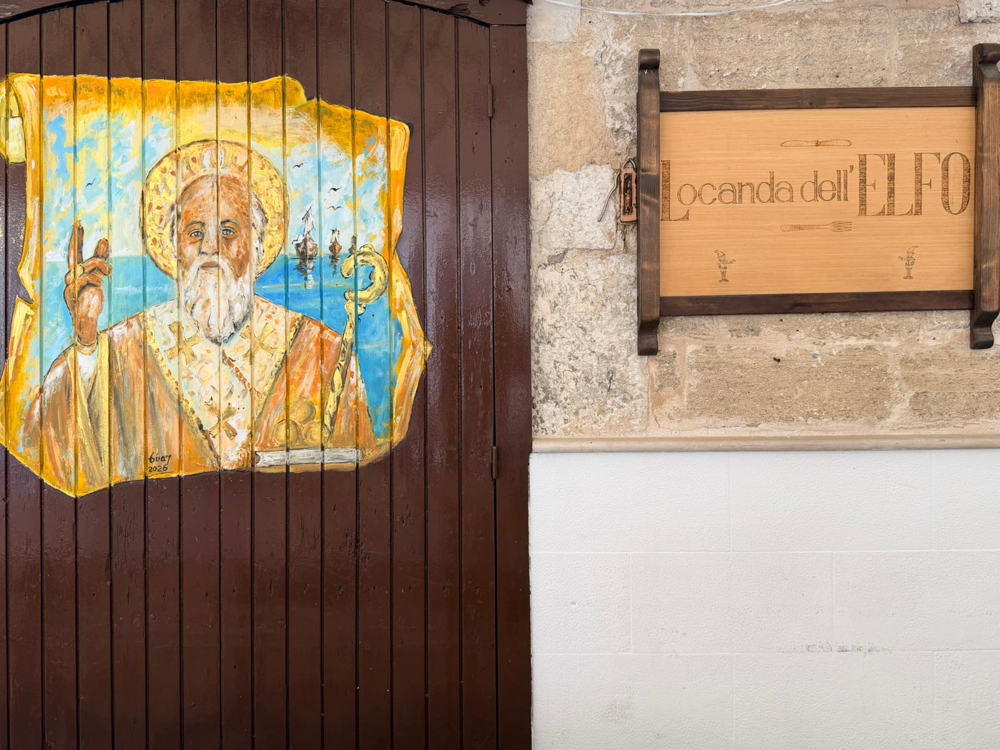
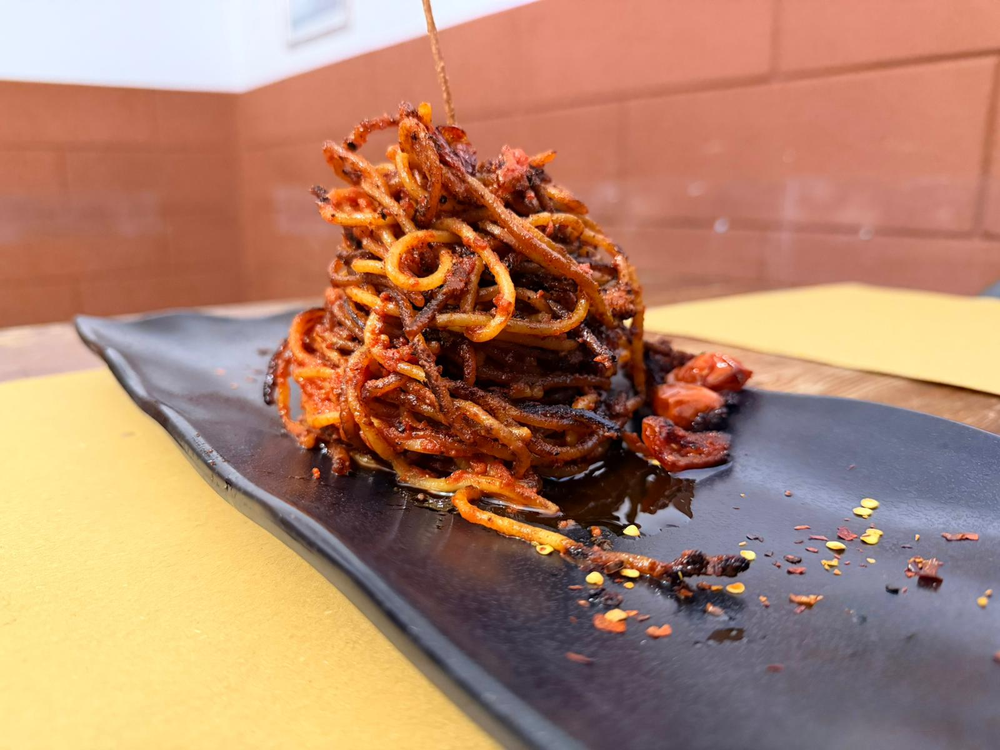
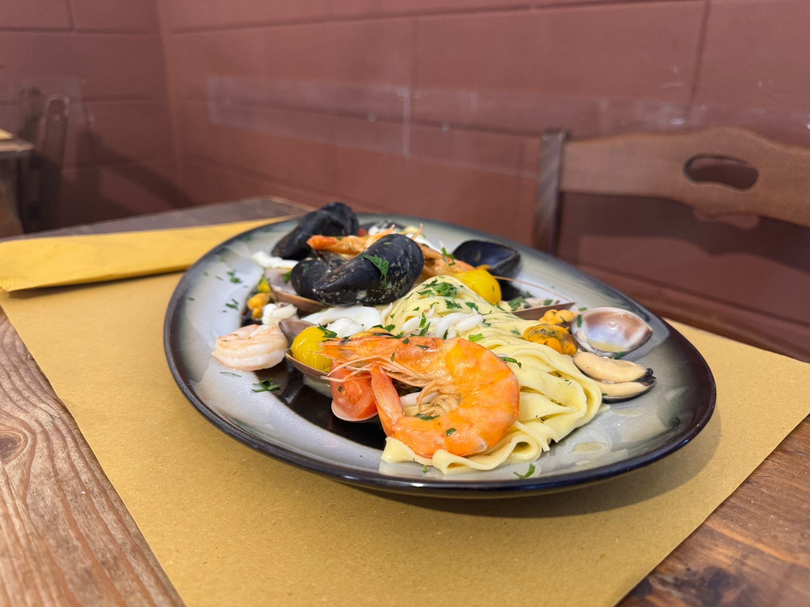
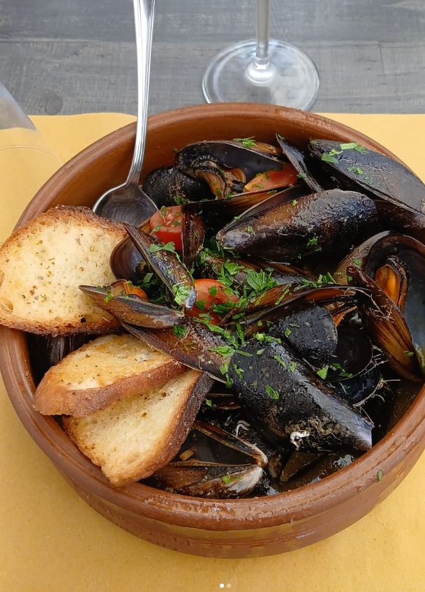
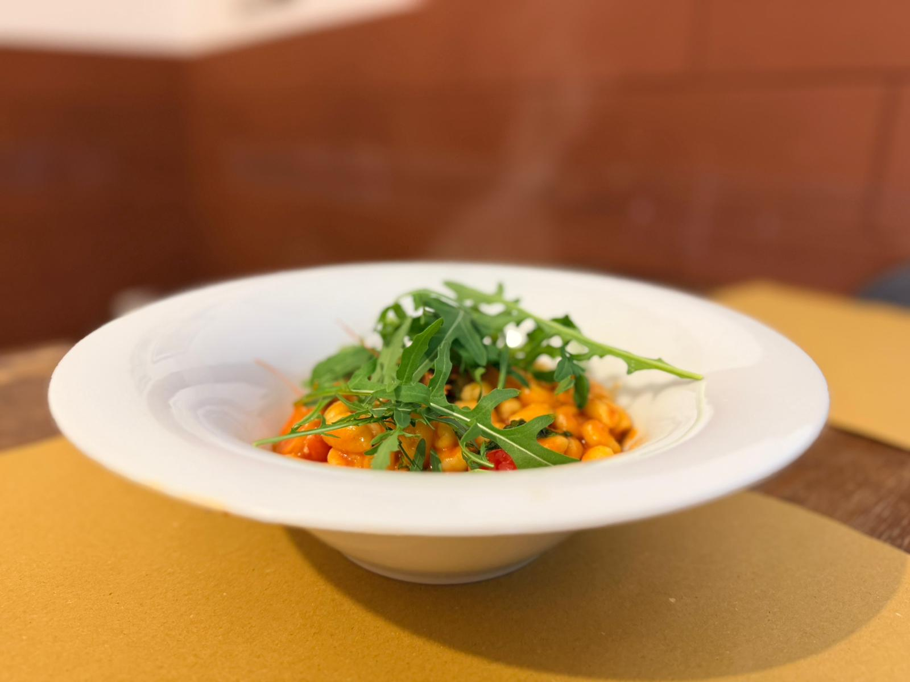
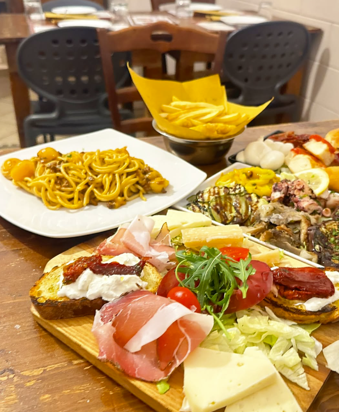
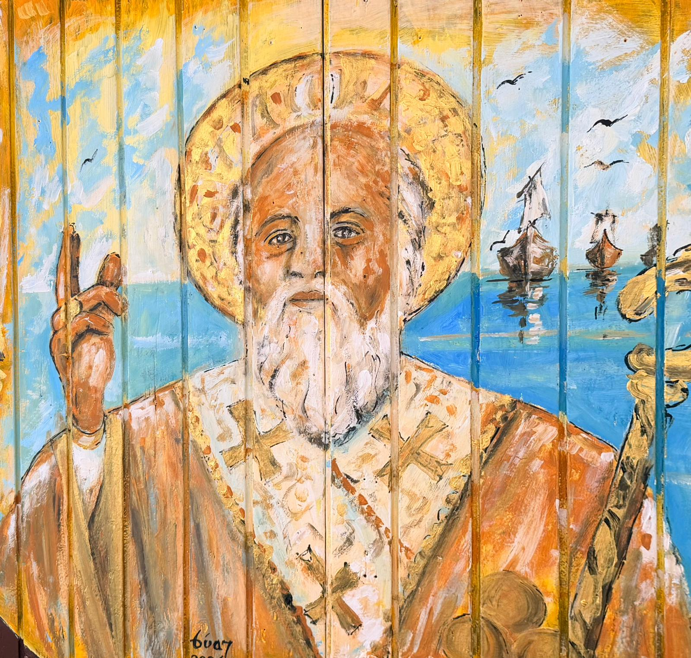

Contemporary Apulian dining
The authentic soul of old Bari, redesigned with modern polish.
A trattoria that blends local recipes, seasonal ingredients and warm hospitality with a cleaner, more premium digital presence.


A recognizable destination for guests looking for a real Bari dining experience.
Short supply chain, cleaner flavors and more consistent presentation.
A smoother user journey built around clarity, trust and quick booking actions.
The visual language now feels more aligned with the restaurant positioning.
Experience
Cleaner layout, richer visuals and a more intuitive flow.
The redesign focuses on hierarchy, spacing, visual rhythm and conversion-driven actions, while keeping the trattoria identity warm and authentic.
01
Sharper UX
Clear structure, easier scanning and stronger calls to action throughout the page.
02
Elegant motion
Scroll reveal, subtle parallax, 3D hover interactions and soft transitions.
03
Responsive first
The experience now scales cleanly across mobile, tablet and desktop layouts.

Food direction
More editorial presentation, same authentic cuisine.
The dishes feel more premium online thanks to bolder framing, stronger contrast and clearer composition.
Featured dishes
Immersive cards with modern 3D hover behavior.
The homepage now uses stronger card compositions to spotlight signature dishes and keep the browsing experience more memorable.


Gallery
A richer grid that highlights food, interiors and atmosphere.
Instead of a flat photo gallery, the new layout mixes card sizes and editorial overlays to create more rhythm and visual depth.

Signature plating
Large imagery gives the product proper emphasis.
Warm interiors
A softer and more premium visual rhythm across the page.

Starters

Comfort dishes

From the sea
More premium storytelling without losing authenticity.

Bari tradition
The design feels current, but the identity remains rooted in place.
Reviews
Guest feedback now has a stronger stage.
A lightweight testimonial slider adds motion, depth and trust without bringing in heavy libraries.
Contact & booking
Getting in touch is now as smooth as browsing the site.
The contact area is cleaner, easier to scan and better optimized for mobile booking behavior.
- Phone +39 329 325 7911
- Email prenotazioni@lalocandadellelfo.it
- Address Strada dei Gesuiti, 28/30 · 70122 Bari
- Opening hours Tue-Sun 12:00-15:00 · 19:00-22:00